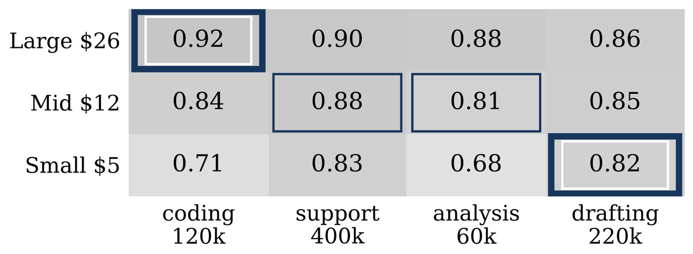
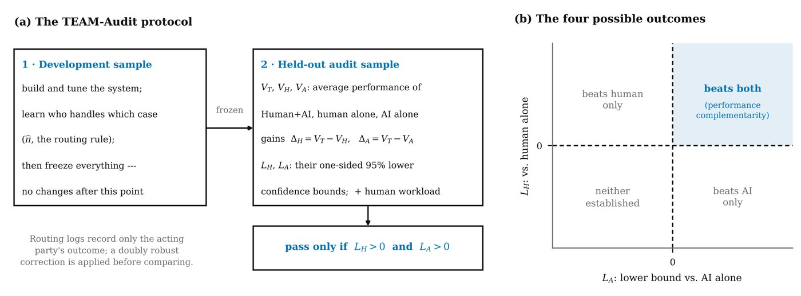
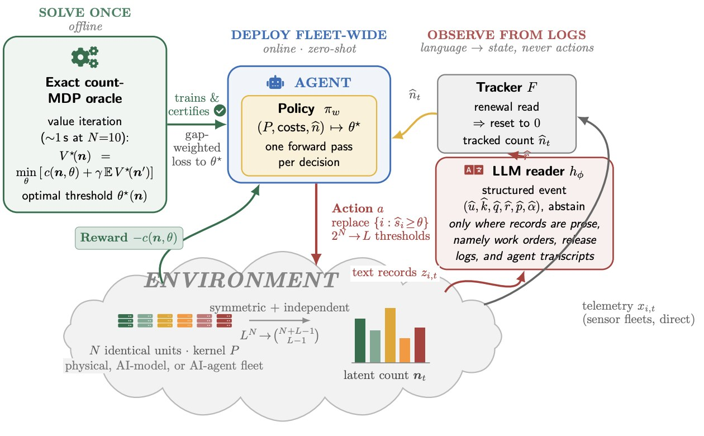
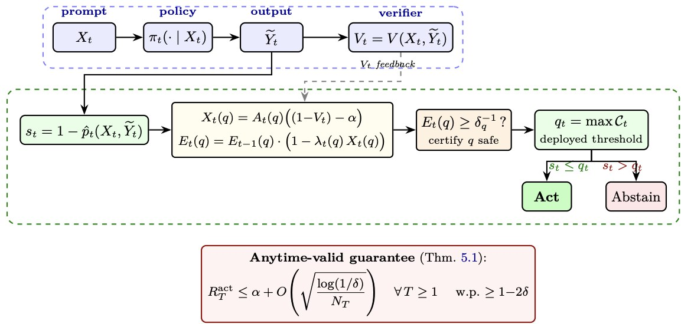
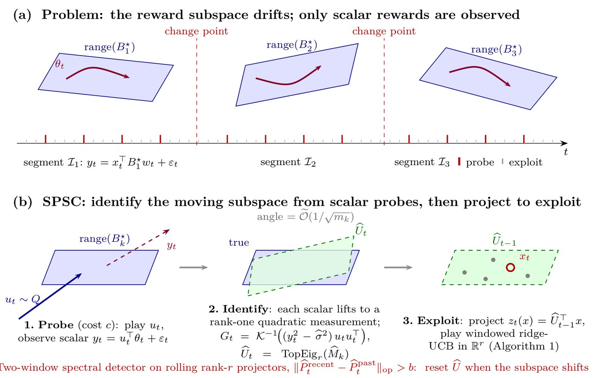
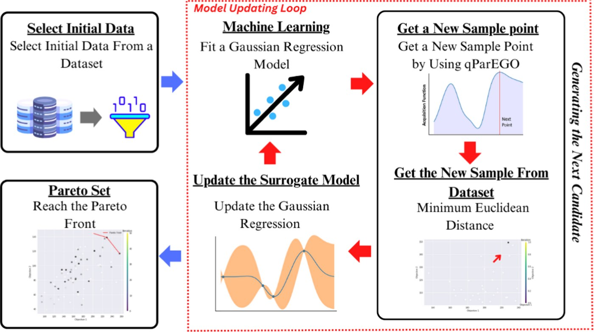
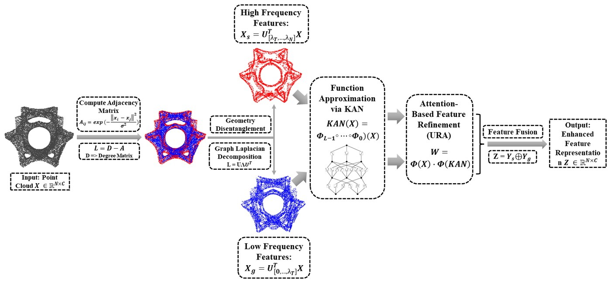

Statistical Evaluation & Deployment of LLMs and AI Agents
Mar 2026 – present · Georgia Tech

The observed quality table for three models across four workloads. Outlined cells are the assignment that maximises weighted quality within a $10,000 budget — the table itself is what has to be estimated.

(a) The TEAM-Audit protocol: the system is built and tuned on a development sample and then frozen; on a held-out audit sample the team’s performance is compared with human alone and AI alone, and the audit passes only if both one-sided lower confidence bounds are positive. (b) The four possible outcomes — the team must beat both the human and the AI on its own to establish complementarity.
Problem
Organizations must decide which LLM or AI agent handles which task — and whether a human–AI team beats either alone — with limited evaluation data and budget.
Approach
This thread develops decision-targeted evaluation methods that direct testing toward the comparisons that could actually change the deployment choice.
Reinforcement Learning × LLMs for Reliable and Adaptive AI Systems
Nov 2025 – present · Georgia Tech

The maintenance framework. A count-MDP oracle is solved once offline and trains a policy deployed fleet-wide; an LLM reads work orders, logs, and transcripts into structured events, a tracker turns them into an estimate of the fleet's state, and the policy chooses which units to replace.

Conformal Selective Acting. Verifier feedback on each output updates an anytime-valid test that certifies a confidence threshold; the model acts when its score clears the threshold and abstains otherwise, with risk bounded at every time step.
Problem
Language models that keep learning from online feedback must stay reliable under uncertainty and distribution shift.
Approach
This thread develops anytime-valid risk control for RLVR-trained LLMs, and an LLM-observed multi-agent reinforcement learning framework that reads operational evidence to decide when deployed models should be maintained, retrained, or updated.
Adaptive Personalization Under Changing User Preferences
Oct 2025 – present · Georgia Tech

(a) The reward subspace rotates at unknown change points while only scalar rewards are observed; red ticks mark priced probes. (b) SPSC probes, identifies the current subspace from the lifted scalar rewards, and exploits by projecting onto it; a two-window spectral detector resets the estimate when the subspace shifts.
Problem
Recommendation and ranking systems learn from sequential feedback while the preferences they are learning drift.
Approach
This thread develops contextual bandit methods that balance exploring new options against exploiting known ones, with low-rank structure that tracks an evolving latent preference space under non-stationarity.
Data and Model Quality Improvement in Smart Manufacturing
Sep 2022 – Aug 2025 · West Virginia University

The sequential learning loop. From a small initial sample, a Gaussian-process surrogate is fitted; qParEGO proposes the next point, the closest real candidate in the dataset is evaluated, the surrogate is updated, and the loop repeats until the Pareto front of the competing objectives is reached.

The KANGURA pipeline. A point cloud becomes a graph whose Laplacian separates high- and low-frequency geometry; a Kolmogorov–Arnold network approximates each, attention-based refinement weights them, and the fused features form the output representation.
Problem
Manufacturing decisions involve expensive experiments, competing objectives, and scarce examples of the failures that matter most.
Approach
This thread introduced a sequential learning framework and evaluation metric for multi-objective optimization, a data augmentation approach for quality control and maintenance, and KANGURA, a geometry-aware model for 3D structure prediction.
The clinical decision-support pipeline. After preprocessing and feature engineering, class imbalance is assessed and corrected with data augmentation; four models are trained on real and augmented data, the augmentation is assessed, and an interpretable model supports the decision for a new patient.
Problem
Clinical datasets are small, imbalanced, and largely binary, which limits what standard models can learn from them.
Approach
This thread built a decision-support system for early dialysis prediction in chronic kidney disease, a data augmentation method designed for binary medical data, and predictive models for adolescent suicide risk and complications in assisted reproduction.
The algorithm's flow. A chaotic map initialises the binary population and a teacher is selected; the population splits into an outstanding group and an average group that each run teacher and student phases, and the merged population is re-evaluated until the stopping criterion is met.
Problem
Feature selection in high-dimensional data is a combinatorial search where standard metaheuristics stall in local optima.
Approach
This thread developed a binary group teaching optimization algorithm with local search and chaotic maps, and applied optimized neural networks with data augmentation to predicting employee turnover.